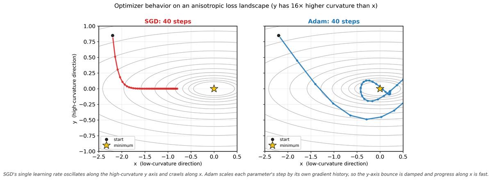
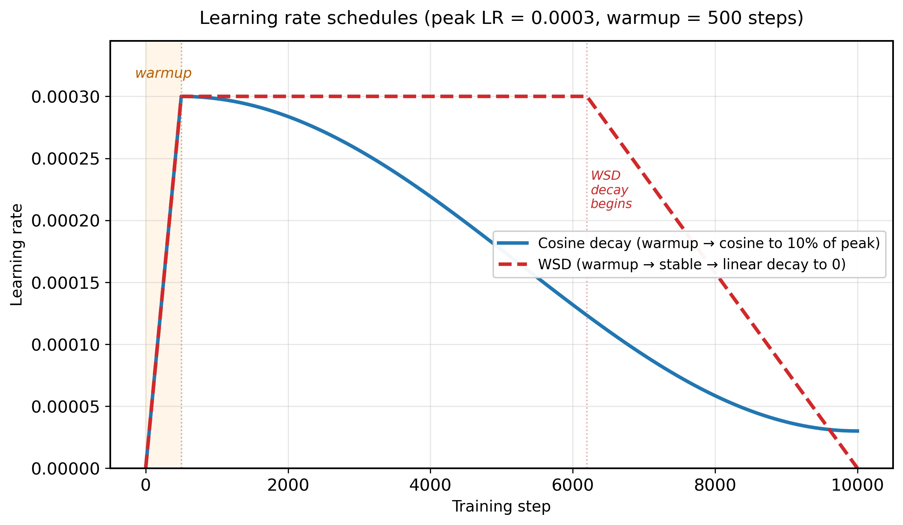
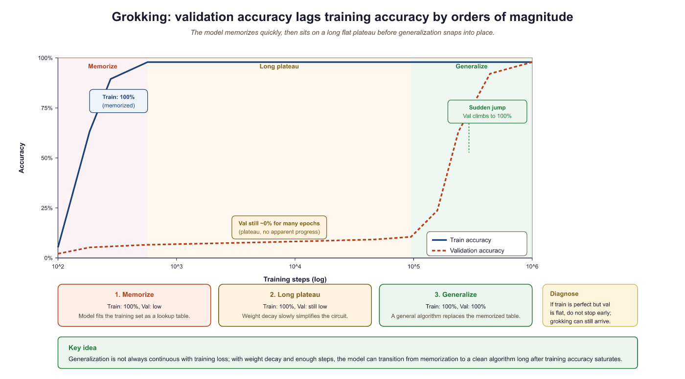

Adam was not the first optimizer, nor the last, but somehow it keeps showing up at every training run like a reliable friend who always picks the restaurant. You could do better, but you probably will not.
Scale, Stubbornly Optimizing AI Agent
Prerequisites
This section assumes familiarity with gradient-based optimization basics and PyTorch tensor operations from Section 0.2. Understanding of transformer layer structure from Section 4.1 will help with the discussion of per-layer training dynamics.
Optimizers are the engine of training. While the model architecture defines what can be learned and the data defines what is taught, the optimizer determines how efficiently the model learns. The choice of optimizer, learning rate schedule, and gradient handling strategy affects training speed, stability, final performance, and memory usage. This section covers the optimizers used in LLM training, from the ubiquitous Adam family to memory-efficient alternatives, along with the training dynamics phenomena that practitioners must understand to diagnose and prevent training failures. The gradient computation foundations from Section 0.2 underpin every technique discussed here.
6.5.1 Stochastic Gradient Descent and Its Limitations
Vanilla SGD updates parameters by subtracting the gradient scaled by a learning rate: $\theta \leftarrow \theta - \eta \nabla L( \theta )$. While SGD with momentum works well for convolutional networks, it performs poorly for transformer training. The core issue is that transformers have parameters operating at vastly different scales: embedding matrices, attention projections, layer norms, and feed-forward layers all have different gradient magnitudes. A single learning rate cannot simultaneously provide appropriate step sizes for all of these.
6.5.2 Adam: The Default Optimizer for Transformers

Adam stores two extra FP32 tensors per parameter (the first-moment $m$ and second-moment $v$ estimates), so the optimizer states alone are 8 bytes per parameter. For a 70B parameter model, that is 70 x 109 x 8 bytes = 560 GB just for $m$ and $v$; in standard mixed-precision training you also keep an FP32 master copy of the weights (another 280 GB), bringing the optimizer-related memory to roughly 840 GB, on top of the FP16 weights and gradients (Rajbhandari et al., 2020, ZeRO, arXiv:1910.02054). Training large models is an exercise where the overhead outweighs the thing you are actually trying to optimize.
Adam (Adaptive Moment Estimation) addresses this by maintaining per-parameter adaptive learning rates based on first and second moment estimates of the gradient. The update rules are:
The second moment estimate tracks the squared gradient magnitude, capturing how variable each parameter's gradient has been:
After bias correction, the parameter update divides the momentum by the square root of the variance, providing adaptive per-parameter learning rates:
where $\hat{m}$ and $\hat{v}$ are bias-corrected estimates (dividing by \$1 - \beta ^{t}$). The typical hyperparameters are $\beta _{1} = 0.9$, $\beta _{2} = 0.999$, and $\epsilon = 10^{-8}$.
Adam stores two additional state tensors (m and v) for every parameter. For a model with N parameters in FP32, the optimizer states require 2N floats, or 8N bytes. Combined with the parameters themselves (4N bytes) and gradients (4N bytes), the total memory footprint is 16N bytes. A 7B parameter model thus needs approximately 112 GB just for parameters, gradients, and optimizer states in FP32.
Key Insight: Your optimizer is bigger than your model. A 7B-parameter model in FP16 occupies 14 GB. But Adam stores two additional FP32 state tensors (momentum and variance) per parameter, consuming 7B x 4 x 2 = 56 GB. The optimizer states alone are 4x the model size. This is why memory-efficient optimizers and FSDP are not optional for large-scale training.
Who: A training infrastructure team at an AI startup midway through a 4-week pre-training run of a 13B parameter model.
Situation: At step 45,000 (out of a planned 100,000), the training loss suddenly spiked from 2.8 to 12.4 and did not recover after 500 additional steps.
Problem: The team had invested \$180,000 in compute. Restarting from scratch would waste that investment, but continuing from the corrupted checkpoint might produce a damaged model.
Dilemma: Roll back to the last stable checkpoint (step 44,000, losing 1,000 steps or roughly \$3,600 of compute) and lower the learning rate, or attempt to recover in-place by resetting the optimizer states while keeping model weights.
Decision: They rolled back to step 44,000 and reduced the peak learning rate by 30%, also enabling gradient clipping at a max norm of 1.0 (previously set to 2.0).
How: Post-mortem analysis revealed the spike correlated with a batch containing anomalously long code sequences that produced extreme gradients. The team also added per-layer gradient norm monitoring and automatic checkpoint saving every 500 steps.
Result: Training resumed successfully, and the model completed training at step 100,000 with a final loss of 2.61 (within expected range). The monitoring system caught two additional near-spikes that were mitigated by the tighter gradient clipping.
Lesson: Loss spikes during LLM training are common, and the combination of frequent checkpointing, gradient norm monitoring, and conservative gradient clipping is more valuable than any optimizer choice.
# Adam optimizer memory budget: each parameter needs 12 bytes (FP32 weight
# + FP32 first moment + FP32 second moment), so 7B params requires ~84 GB.
import torch
# Understanding Adam's memory footprint
model_params = 7e9 # 7B parameters
bytes_per_param = 4 # FP32
param_memory = model_params * bytes_per_param
gradient_memory = model_params * bytes_per_param
adam_m_memory = model_params * bytes_per_param # first moment
adam_v_memory = model_params * bytes_per_param # second moment
total = param_memory + gradient_memory + adam_m_memory + adam_v_memory
print(f"Parameters: {param_memory / 1e9:.1f} GB")
print(f"Gradients: {gradient_memory / 1e9:.1f} GB")
print(f"Adam m (1st mom): {adam_m_memory / 1e9:.1f} GB")
print(f"Adam v (2nd mom): {adam_v_memory / 1e9:.1f} GB")
print(f"Total: {total / 1e9:.1f} GB")from transformers import get_cosine_schedule_with_warmup
import torch
optimizer = torch.optim.AdamW(model.parameters(), lr=3e-4)
scheduler = get_cosine_schedule_with_warmup(
optimizer,
num_warmup_steps=2000,
num_training_steps=100000
)
# In your training loop:
for step, batch in enumerate(dataloader):
loss = model(batch).loss
loss.backward()
optimizer.step()
scheduler.step() # updates LR automatically
optimizer.zero_grad()6.5.3 AdamW: Decoupled Weight Decay
Loshchilov and Hutter (2019) identified a subtle but important flaw in Adam's handling of weight decay (L2 regularization). In standard Adam, weight decay is applied to the gradient before the adaptive scaling, which means the effective regularization strength varies across parameters based on their second moment estimates. AdamW fixes this by decoupling weight decay from the gradient update:
Here, $\lambda$ is the weight decay coefficient (typically 0.01 to 0.1), and it is applied uniformly to all parameters regardless of their gradient history. This decoupling is particularly important for transformers because different parameter groups (attention weights, embeddings, biases) benefit from consistent regularization strength.
AdamW is the de facto standard optimizer for LLM training. Nearly every major open LLM (GPT, Llama, Mistral, Qwen) uses AdamW. The decoupled weight decay provides more consistent regularization across the model's diverse parameter groups, leading to better generalization. Weight decay is typically not applied to bias terms or layer normalization parameters.
6.5.4 Memory-Efficient Optimizer Alternatives
Adafactor
Adafactor (Shazeer and Stern, 2018) reduces Adam's memory overhead by factoring the second-moment matrix. Instead of storing a full $v$ tensor for each parameter matrix, Adafactor stores only the row and column statistics: two vectors whose outer product approximates the full matrix. For a weight matrix of shape $(m, n)$, this reduces the second-moment storage from $mn$ to $m + n$. Adafactor was used in the T5 model family.
8-bit Adam
Dettmers et al. (2022) showed that Adam's optimizer states (m and v) can be quantized to 8-bit integers with dynamic block-wise quantization, reducing optimizer memory by 75% with negligible impact on training quality. The key insight is that optimizer states do not need full precision: they accumulate slowly changing statistics, and small quantization errors are averaged out over training steps.
LION (Sign-Based Optimizer)
LION (Chen et al., 2023) takes a radically different approach. Instead of using the full gradient magnitude, LION uses only the sign of the momentum update: every parameter is updated by exactly $+ \eta$ or $- \eta$. This eliminates the second moment entirely, cutting optimizer memory in half compared to Adam. LION also uses a different momentum interpolation that mixes past momentum with the current gradient. Despite its simplicity, LION matches or exceeds AdamW on many vision and language tasks.
| Optimizer | States per Param | Memory (7B model) | Used In |
|---|---|---|---|
| AdamW | 2 (m, v) | ~56 GB | GPT, Llama, Mistral |
| Adafactor | ~0.5 (factored v) | ~21 GB | T5, PaLM |
| 8-bit Adam | 2 (quantized) | ~21 GB | Fine-tuning |
| LION | 1 (m only) | ~35 GB | Research, some vision |
Muon and Next-Generation Optimizers
While AdamW remains the workhorse of LLM training, a wave of newer optimizers is challenging its dominance. Muon (Jordan et al., 2024), short for "Momentum + Orthogonalization," takes a fundamentally different approach to parameter updates. Instead of maintaining per-parameter adaptive learning rates like Adam, Muon applies orthogonalization to the momentum buffer at each step, projecting the update direction onto the Stiefel manifold. In simpler terms, Muon ensures that each update step moves the weight matrix in a direction that preserves the orthogonality of its rows or columns, which helps maintain well-conditioned representations throughout training.
Muon gained attention when it achieved state-of-the-art results on the nanogpt-speedrun benchmark, training a GPT-2 scale model faster than any AdamW configuration. Its key advantage is that it requires only a single momentum buffer (like LION) rather than two (like Adam), cutting optimizer memory in half (a savings that compounds with the memory reductions from parameter-efficient methods like LoRA and QLoRA). Unlike LION, Muon preserves gradient magnitude information through the orthogonalization step rather than discarding it via sign operations.
Several other optimizers have emerged alongside Muon. SOAP (Vyas et al., 2024) uses Shampoo-style second-order preconditioning but approximates the expensive matrix operations to reduce overhead. Schedule-Free Adam (Defazio and Mishchenko, 2024) eliminates the learning rate schedule entirely by incorporating averaging theory directly into the optimizer update, removing the need to tune warmup steps and decay schedules. Adalayer applies different effective learning rates to different layers automatically, addressing the well-known issue that optimal learning rates vary across a model's depth.
Despite these innovations, AdamW is unlikely to be displaced quickly in production settings. Optimizer changes interact with every other hyperparameter (learning rate, weight decay, batch size, gradient clipping), and the training recipes for major models have been extensively tuned for AdamW. When fine-tuning pretrained models (covered in Chapter 17), these same optimizer choices carry over, though lower learning rates are typically used. New optimizers must demonstrate not just competitive loss curves on small benchmarks but stable, reliable behavior across months-long training runs at trillion-token scale. That said, Muon and Schedule-Free Adam are increasingly appearing in research-scale training runs, and future large-scale training recipes will likely incorporate ideas from these newer designs.
6.5.5 Learning Rate Schedules

Warmup
Transformer training universally begins with a warmup phase where the learning rate increases linearly from near-zero to the peak value over several hundred to several thousand steps. Warmup is necessary because at initialization, the model's loss landscape is poorly conditioned: gradients can be very large and noisy. Starting with a high learning rate would cause catastrophic parameter updates that push the model into a bad region of the loss landscape from which it cannot recover. Warmup allows the optimizer's moment estimates to stabilize before applying large updates.
Cosine Decay
After warmup, the learning rate is typically decayed following a cosine schedule:
where $T$ is the total number of training steps. Cosine decay provides a smooth, gradual reduction that spends most of the training budget at moderate learning rates. The minimum learning rate is typically set to 10% of the peak rate. Some variants use cosine decay with warm restarts, periodically resetting the schedule to escape local minima.
# Warmup + cosine decay LR schedule: ramp linearly for warmup_steps,
# then decay following a cosine curve down to min_lr.
import numpy as np
import matplotlib.pyplot as plt
def lr_schedule(step, total_steps, warmup_steps, peak_lr, min_lr):
"""Warmup + cosine decay schedule."""
if step < warmup_steps:
# Linear warmup
return peak_lr * step / warmup_steps
else:
# Cosine decay
progress = (step - warmup_steps) / (total_steps - warmup_steps)
return min_lr + 0.5 * (peak_lr - min_lr) * (1 + np.cos(np.pi * progress))
# Typical LLM training schedule
total_steps = 100000
warmup_steps = 2000
peak_lr = 3e-4
min_lr = 3e-5
steps = np.arange(total_steps)
lrs = [lr_schedule(s, total_steps, warmup_steps, peak_lr, min_lr) for s in steps]
print(f"Step 0: LR = {lrs[0]:.2e}")
print(f"Step 1000: LR = {lrs[1000]:.2e}")
print(f"Step 2000: LR = {lrs[2000]:.2e} (peak)")
print(f"Step 50000: LR = {lrs[50000]:.2e}")
print(f"Step 99999: LR = {lrs[99999]:.2e}")The manual schedule function above is useful for understanding the math. In practice, the Hugging Face transformers library provides pre-built schedulers that plug directly into any PyTorch optimizer:
pip install transformers. Also available: get_linear_schedule_with_warmup, get_constant_schedule_with_warmup, and get_cosine_with_hard_restarts_schedule_with_warmup. If you use the Trainer class, the schedule is configured automatically via TrainingArguments(lr_scheduler_type="cosine", warmup_steps=2000).
WSD: Warmup-Stable-Decay
A newer schedule, increasingly preferred for large-scale training, is the Warmup-Stable-Decay (WSD) schedule (also called trapezoidal). Instead of continuously decaying the learning rate after warmup, WSD maintains a constant "stable" phase at the peak learning rate for most of training, then applies a rapid linear or cosine decay only during a short final phase (typically the last 10-20% of steps).
WSD has a crucial practical advantage: because the learning rate stays constant during the stable phase, you can evaluate checkpoints and decide later when to begin the decay phase. With cosine decay, the total training budget must be known in advance. WSD decouples the schedule from the total step count, making it ideal for continued pretraining and for models where the final training duration is not known at the start. Llama 3, DeepSeek V3, and Qwen 2.5 all used WSD schedules (see Section 8.2 for details on these models).
# Warmup-Stable-Decay (WSD) schedule: warmup, hold at peak_lr for a
# stable fraction of training, then decay. Used in recent large runs.
import numpy as np
def wsd_schedule(step, total_steps, warmup_steps, stable_fraction, peak_lr, min_lr):
"""Warmup-Stable-Decay learning rate schedule."""
decay_start = int(total_steps * stable_fraction)
if step < warmup_steps:
return peak_lr * step / warmup_steps
elif step < decay_start:
return peak_lr # Constant during stable phase
else:
# Linear decay in the final phase
decay_progress = (step - decay_start) / (total_steps - decay_start)
return peak_lr + (min_lr - peak_lr) * decay_progress
total_steps = 100000
warmup_steps = 2000
peak_lr, min_lr = 3e-4, 3e-5
# Stable phase covers 80% of training; decay covers last 20%
for s in [0, 2000, 40000, 79999, 80000, 90000, 99999]:
lr = wsd_schedule(s, total_steps, warmup_steps, 0.8, peak_lr, min_lr)
print(f"Step {s:>6}: LR = {lr:.2e}")Why WSD is winning: Cosine decay commits you to a fixed training budget. If you want to train longer, you must restart with a new schedule. WSD lets you extend the stable phase indefinitely and only apply the decay when you are ready to produce the final checkpoint. This makes WSD the natural choice for iterative training workflows and continued pretraining on new data.
6.5.6 Gradient Accumulation
Large batch sizes improve training stability and efficiency but require more GPU memory. Gradient accumulation simulates large batches without the memory cost: instead of processing the full batch at once, the training loop processes several smaller micro-batches, accumulating their gradients, and only performing the optimizer step after all micro-batches are complete.
import torch
# Gradient accumulation pseudocode
accumulation_steps = 8 # Effective batch = micro_batch * 8
# Reset gradients from previous step
optimizer.zero_grad()
for i, micro_batch in enumerate(dataloader):
loss = model(micro_batch) / accumulation_steps # Scale loss
# Compute gradients via backpropagation
loss.backward() # Accumulate gradients
if (i + 1) % accumulation_steps == 0:
torch.nn.utils.clip_grad_norm_(model.parameters(), max_norm=1.0)
# Update weights using computed gradients
optimizer.step()
optimizer.zero_grad()
The loss must be divided by the number of accumulation steps to keep the effective gradient magnitude consistent with a true large batch. Forgetting this division is a common bug that results in an effective learning rate that is too large by a factor of the accumulation count.
6.5.7 Training Dynamics: The Loss Landscape
The loss landscape of a transformer is a high-dimensional surface with complex geometry. Research by Li et al. (2018) showed that neural network loss landscapes contain wide, flat minima and narrow, sharp minima. Models that converge to flatter minima tend to generalize better because small perturbations to the parameters (as occur with different test inputs) cause smaller changes in loss.
The Grokking Phenomenon
Power et al. (2022) discovered a surprising training dynamic called "grokking": a model can memorize the training set early in training (achieving near-perfect training accuracy) while showing no generalization, and then, after many additional training steps, suddenly transition to perfect generalization. This delayed generalization can occur thousands of steps after the training loss has plateaued.
Grokking challenges the conventional wisdom that training should be stopped when the validation loss plateaus. The phenomenon has been explained through the lens of representation learning: the model first memorizes using inefficient representations, then gradually discovers the underlying algorithm, which requires more training steps to crystallize. Weight decay plays a critical role in enabling grokking by continuously pushing the model away from memorization-based solutions toward simpler, more generalizable representations.

Grokking is related to the double descent phenomenon (Nakkiran et al., 2019), where test loss first decreases, then increases at the interpolation threshold, then decreases again as model capacity grows further. Both phenomena suggest that models pass through a memorization regime before finding generalizable solutions. Weight decay and regularization help models traverse this landscape more quickly: without weight decay, grokking may not occur at all, because the model has no pressure to find simpler representations.
Maximal Update Parametrization (muP) solves a critical practical problem: hyperparameters tuned on small models do not transfer to large models under standard parametrizations. muP defines a parametrization where the optimal learning rate, initialization scale, and other hyperparameters remain stable as model width increases. This lets practitioners tune on a small model (e.g., 40M parameters) and directly transfer those settings to a much larger model (e.g., 6.7B), dramatically reducing the cost of hyperparameter search. For an alternative approach to reducing training costs, see the parameter-efficient fine-tuning techniques in Section 19.1. Stanford CS336 covers muP as a key technique for efficient large-scale training.
6.5.8 Training Instabilities
Large-scale training runs frequently encounter instabilities that can derail training entirely if not handled.
Loss Spikes
Sudden jumps in training loss, sometimes by several orders of magnitude, are a common occurrence in LLM training. They are typically caused by outlier batches with unusual gradient distributions, numerical overflow in attention computations, or learning rate being too high for the current loss landscape curvature. Loss spikes can often be recovered from (the loss returns to its pre-spike trajectory), but severe spikes may corrupt optimizer states and require rolling back to a checkpoint.
Gradient Clipping
The universal mitigation for gradient instability is gradient clipping: scaling the gradient vector so its global norm does not exceed a threshold (typically 1.0). This prevents any single batch from causing a catastrophically large parameter update.
z-Loss Regularization
PaLM introduced z-loss, an auxiliary loss term that penalizes large logits in the output layer: $L_{z} = \alpha \cdot log^{2}(Z)$, where $Z$ is the sum of exponentials in the Transformer architecture denominator. This prevents attention entropy collapse and reduces the frequency of loss spikes.
Show Answer
Show Answer
loss.backward() after each one. Because PyTorch accumulates gradients by default (adding new gradients to existing ones), the accumulated gradient after K micro-batches is equivalent to the gradient computed on the full batch of size K times the micro-batch size. The loss is divided by K to normalize the gradient magnitude. The optimizer step is only performed after all K micro-batches, producing the same update as a single large batch.Show Answer
Show Answer
For pretraining, cosine annealing with warmup is the safest default schedule. Use 1 to 5% of total steps for warmup, then cosine decay to 10% of peak learning rate. This combination is robust across model sizes from 125M to 70B parameters.
Grokking reveals something profound about how neural networks learn: memorization and generalization are not points on a continuum but qualitatively different solutions in weight space. The model first finds a memorizing solution (a complex, high-dimensional surface that fits the training data exactly) and only later, through continued weight decay, discovers a simpler, generalizing solution. This is reminiscent of Occam's razor expressed as a physical process: the regularizer gradually erodes the overly complex solution until only the essential structure remains. The phenomenon connects to the lottery ticket hypothesis (Frankle and Carlin, 2019), which shows that sparse subnetworks within large models can match the full model's performance, suggesting that the generalizing solution is literally a simpler subset of the memorizing one. For practitioners, grokking challenges the standard early stopping heuristic and suggests that some of the most powerful learning happens after the point where we normally stop training.
Key Takeaways
- AdamW is the standard optimizer for LLM training, providing per-parameter adaptive learning rates with properly decoupled weight decay.
- Memory cost of Adam is substantial: 2 state tensors per parameter, totaling 16 bytes per parameter in FP32 (parameters + gradients + two moment buffers).
- Adafactor, 8-bit Adam, and LION reduce optimizer memory through factorization, quantization, and sign-based updates respectively.
- Learning rate schedules combine warmup (to stabilize early training) with either cosine decay or WSD (Warmup-Stable-Decay). WSD is increasingly preferred because it decouples the schedule from the total training budget, enabling flexible continued pretraining.
- Gradient accumulation simulates large batch sizes without additional memory by accumulating gradients across micro-batches.
- Grokking demonstrates that generalization can emerge long after memorization, suggesting that extended training with weight decay enables the discovery of underlying structure.
- Gradient clipping and z-loss are critical stability mechanisms that prevent loss spikes and attention collapse during large-scale training.
Exercises
AdamW differs from Adam by decoupling weight decay from the gradient update. (a) State the actual update rule difference in one equation. (b) Explain why this matters specifically for Transformers and not, say, a small MLP. (c) Why is the practical effect bigger when the learning rate schedule includes a warmup phase?
Answer Sketch
(a) Adam adds lambda * w into the gradient that goes through the moment buffers; AdamW applies w <- w - lr * lambda * w directly, outside the adaptive scaling. (b) Transformers have hugely varying parameter scales (LayerNorm gains, embeddings, attention projections); Adam's adaptive normalization couples weight decay strength to the per-parameter gradient magnitude, so large-gradient parameters get penalized more, which is the opposite of the intent. AdamW gives every parameter the same effective decay. (c) During warmup the gradient moments are noisy; Adam's coupled decay swings wildly with them, sometimes effectively turning weight decay off, while AdamW's decoupled decay keeps regularizing consistently and produces the smoother loss curves you see in modern training runs.
For a 7B-parameter model trained in fp32 with Adam: (a) compute the bytes of GPU memory for parameters, gradients, and Adam moments combined; (b) repeat for bfloat16 mixed-precision training (parameters and grads in bf16, optimizer state in fp32); (c) what fraction of the original memory does mixed-precision save?
Answer Sketch
(a) fp32: each tensor is 4 bytes per param. Params + grads + 2 Adam moments = 4 tensors x 4 bytes x 7B = 112 GB. (b) bf16 mixed precision: params (2B) + grads (2B) + master fp32 params (4B) + 2 fp32 moments (8B) = 16 bytes/param x 7B = 112 GB... still! The trick is that "master parameters" are usually held only on the optimizer-state shard in ZeRO-style training, so per-replica memory is roughly grads (2B) + activations + sharded optimizer state. Naive non-sharded mixed precision saves only the activation footprint, which dominates anyway. (c) On its own, mixed precision saves activation memory and roughly halves bandwidth, but per-parameter optimizer state savings need ZeRO/FSDP. This is why "8-bit Adam" and "Lion" optimizers exist: they cut the dominant cost.
Modify a generic torch.optim.lr_scheduler.LambdaLR to implement a 2000-step linear warmup followed by cosine decay to 10% of peak LR over 100,000 total steps. Write the lambda function in 4 lines.
Answer Sketch
import math
WARM, TOTAL, MIN = 2000, 100_000, 0.1
def lr_lambda(step):
if step < WARM: return step / WARM
p = (step - WARM) / (TOTAL - WARM)
return MIN + (1 - MIN) * 0.5 * (1 + math.cos(math.pi * p))The warmup ramps the learning rate linearly from 0 to peak; the cosine then smoothly decays from peak to MIN x peak by step 100k. This is the schedule used by the Llama and Mistral pretraining recipes. Skipping warmup commonly produces a loss spike at step ~50-200 because Adam's moment estimates are not yet stable.
Your 13B pretraining run is humming along when, at step 47,500, the loss jumps from 2.1 to 6.8 in a single step and stays there. Walk through the diagnostic checklist: (a) what are the four most common causes of mid-run loss spikes? (b) Which logged signals should you check first? (c) What is the standard recovery procedure?
Answer Sketch
(a) Most common causes: (i) a bad data shard (corrupted UTF-8, all-blank documents, an unintended dump of repeated tokens); (ii) gradient explosion when entering a region of the loss landscape with large curvature, often correlated with high gradient norm just before; (iii) a hardware or numerics issue (single GPU producing NaNs in attention softmax, especially common with fp16 vs bf16); (iv) a learning-rate schedule discontinuity (e.g., resumed run with wrong scheduler step). (b) Check: gradient norm history, per-rank loss to see if one GPU is the culprit, and the data manifest for the affected step range. (c) Standard recovery: roll back to the most recent checkpoint, skip the offending data shard, optionally clip gradient norm more aggressively, and resume. PaLM, OPT, and BLOOM all documented this pattern.
Beyond Adam: muon and schedule-free optimization. While AdamW dominates current practice, several promising alternatives have emerged. Muon (Jordan et al., 2024) uses matrix orthogonalization to compute updates, achieving faster convergence on language modeling tasks. Schedule-free optimizers (Defazio et al., 2024) eliminate the need for predefined learning rate schedules by dynamically adjusting step sizes, simplifying the hyperparameter search. Meanwhile, GaLore and APOLLO project gradients into low-rank subspaces, enabling full pre-training of 7B+ models on consumer GPUs. These advances suggest that optimizer memory and tuning complexity may soon cease to be bottlenecks for large-scale training.
What's Next?
In the next section, Section 6.6: Distributed Training at Scale, we explore distributed training techniques that enable training across hundreds or thousands of GPUs.